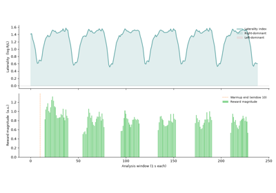
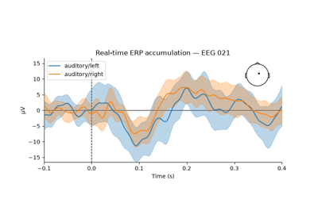
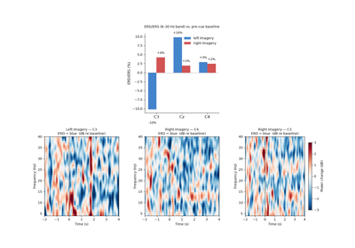
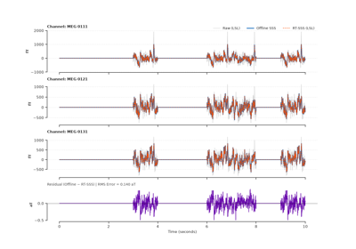

Examples Gallery#

Alpha laterality neurofeedback with real-time adaptive protocol
Alpha laterality neurofeedback with real-time adaptive protocol

Real-time ERP accumulation — RTEpochs + epoch visualisation
Real-time ERP accumulation — RTEpochs + epoch visualisation

Motor imagery neurofeedback — ERD/ERS laterality
Motor imagery neurofeedback — ERD/ERS laterality

Real-time Maxwell filtering (SSS) with LSL streaming
Real-time Maxwell filtering (SSS) with LSL streaming